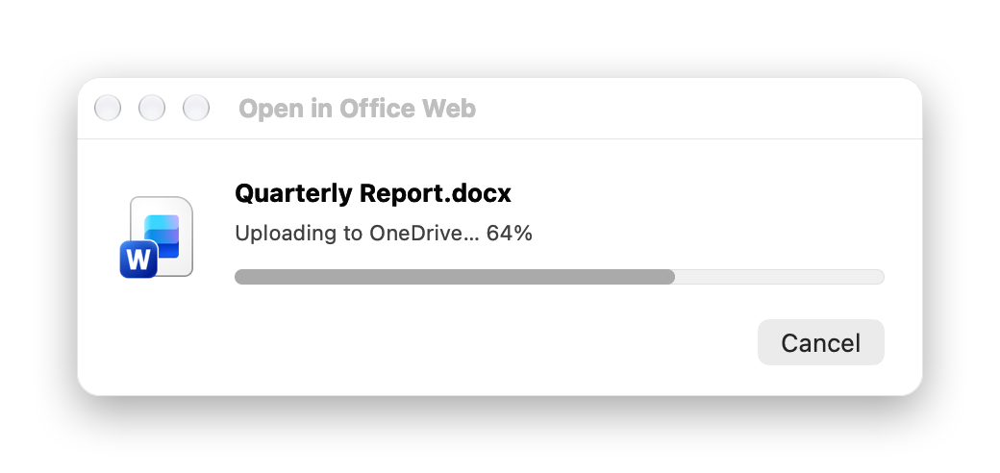
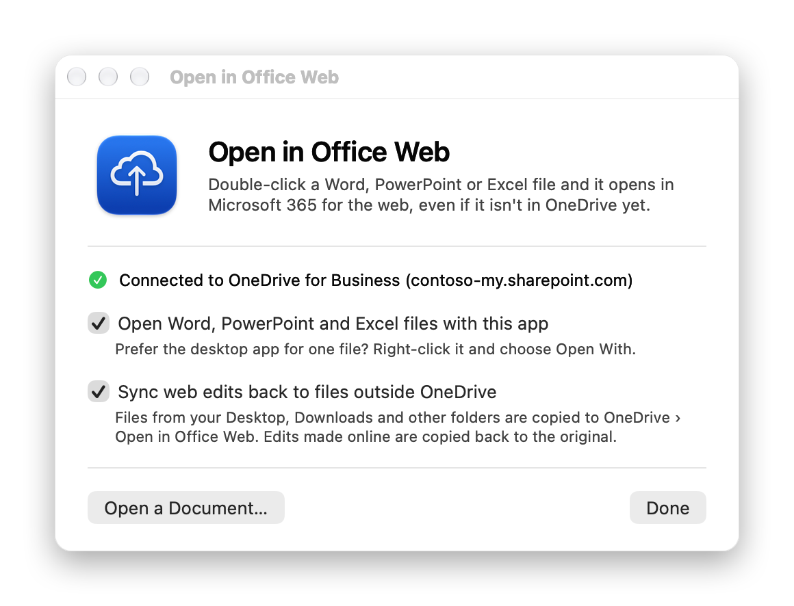

Double-click. It opens in Office for the web.
Word, PowerPoint and Excel files on your Mac open in Microsoft 365 for the web, even outside OneDrive.

- Free and open sourceMIT licensed
- Under 2 MBNative Swift, no Electron
- macOS 13 or laterApple Silicon and Intel
- No telemetryMakes no network requests

Office for the web, as your default app.
It's fast, always up to date, and autosaves. This app makes it what opens when you double-click a document.
Any folder
Files in OneDrive open straight away. Files on your Desktop or in Downloads are copied to OneDrive first.
Sync back
Edits made online are copied back to the original file, and local edits go up to OneDrive.
Real upload status
Progress comes from macOS File Provider, the same source Finder uses for its cloud icons.
Safe fallback
If OneDrive is offline, one click opens the file in the desktop app instead.
How it works
No sign-in and no Microsoft Graph calls. The app works with the OneDrive client you already have.
-
Find OneDrive
It locates your OneDrive for Business folder and reads your SharePoint address from the shortcut OneDrive keeps there.
-
Wait for the upload
Files outside OneDrive are copied in. The app watches File Provider until macOS reports the copy as uploaded.
-
Open the right link
It builds the same kind of link as OneDrive's "Copy link", so the document opens in the browser instead of downloading.
Install
About a minute, start to finish.
You need macOS 13 Ventura or later and the OneDrive app signed in with a work or school account.
-
Download
Get the latest .dmg and drag the app to Applications.
-
Open it the first time
The app isn't notarized by Apple yet, so macOS asks once:
- macOS 15 and later: click Done, then go to System Settings › Privacy & Security and click Open Anyway.
- macOS 13 and 14: right-click the app, choose Open, then confirm.
-
Choose your options
In the welcome window, make it the default for Office files and turn on sync back if you want it. You can reopen this window any time from Applications.
Everything stays on your Mac.
The app makes no network requests of its own and has no telemetry. It reads and writes files locally. OneDrive does the uploading, and your browser opens the document.
Questions
Why does macOS say the app can't be verified?
Notarization requires a paid Apple Developer ID, which this project doesn't have yet. Releases are built in the open by GitHub Actions from the public source code, and you can build it yourself in under a minute. To skip the Gatekeeper prompt after downloading, run:
xattr -dr com.apple.quarantine "/Applications/Open in Office Web.app"Does it work with personal OneDrive or SharePoint team sites?
Not yet. Only OneDrive for Business (work or school) is supported. Files in synced SharePoint libraries are copied to OneDrive first, like any other file.
What happens if I edit the same file in both places?
The original is never overwritten. The web version is saved next to it as report (web version).docx and you get a notification.
Can I still use the desktop Office apps?
Yes. Right-click any file and choose Open With. To hand Office files back to the desktop apps for good, turn off the first option in the welcome window.
How do I uninstall it?
Open the app, turn off both options, then delete it. Optionally also delete ~/Library/Application Support/OpenInOfficeWeb and the Open in Office Web folder in OneDrive.